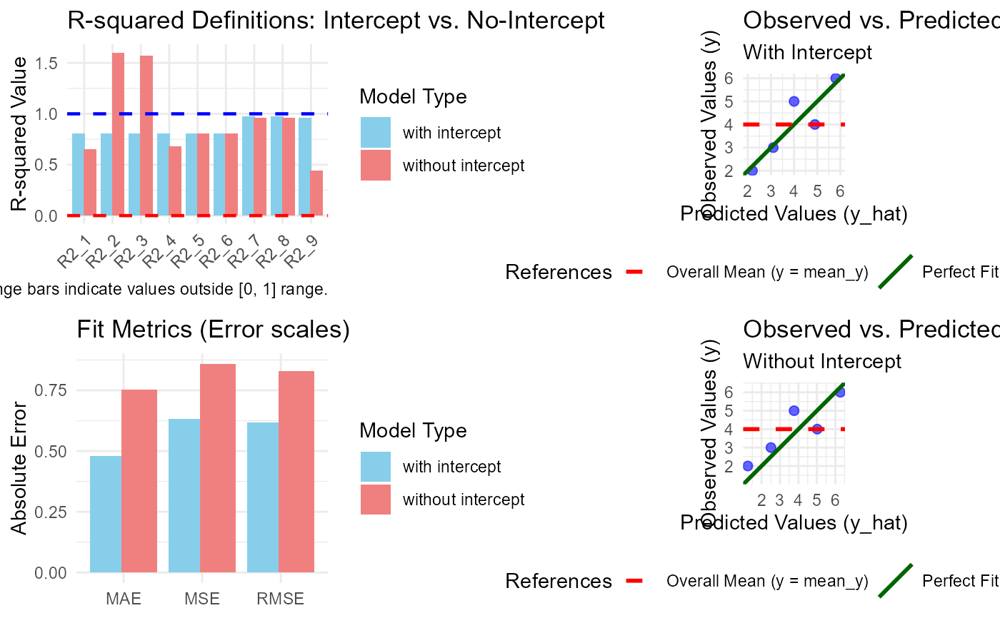

Generates a comprehensive 2x2 diagnostic dashboard comparing models with and without an intercept. This visualization helps identify how the absence of an intercept affects different R-squared definitions and error metrics.
Usage
# S3 method for class 'comp_model'
plot(x, ...)Arguments
- x
An object of class
comp_modelgenerated bycomp_model().- ...
Further graphical parameters (currently ignored).
Value
This function is primarily called for its side effect of creating a
grid-based plot. It returns the input object x invisibly.
Details
The plot is organized into four panels:
Top-Left: Grouped bar chart of the nine R-squared definitions.
Bottom-Left: Comparison of absolute fit metrics (RMSE, MAE, MSE).
Top-Right: Observed vs. Predicted plot for the intercept model.
Bottom-Right: Observed vs. Predicted plot for the no-intercept model.
This layout allows for a direct "cause-and-effect" analysis: for instance, observing a data point far from the identity line in the bottom-right panel explains why certain R-squared definitions might crash or become negative in the left panels.
Note
Since this plot uses the grid system to combine multiple ggplot
objects, it cannot be further modified with the + operator. If you
need to customize individual panels, use the internal plotting functions
or extract the models from the comp_model object attributes.
Examples
df <- data.frame(x = 1:5, y = c(2, 3, 5, 4, 6))
m1 <- lm(y ~ x, data = df)
res <- comp_model(m1)
plot(res)
